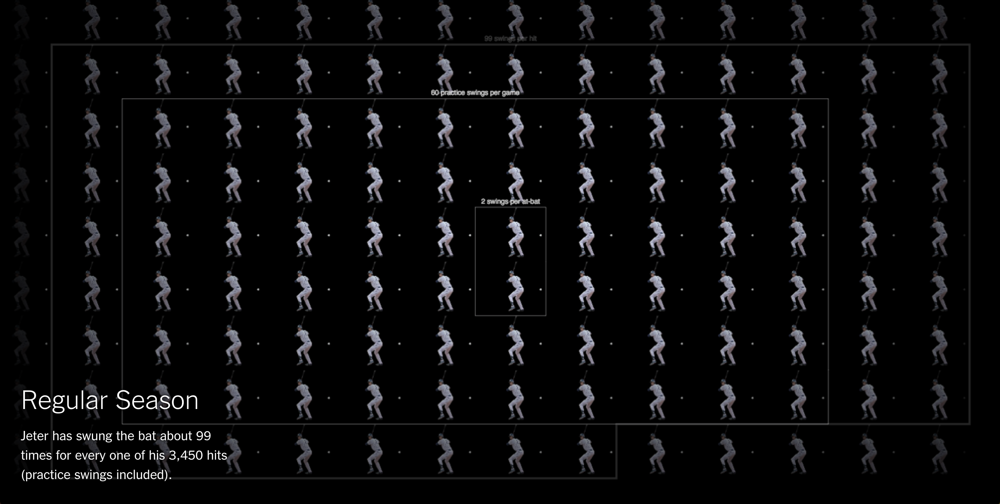
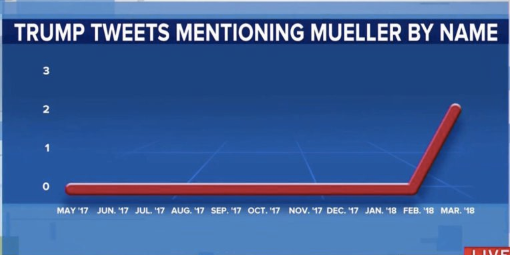
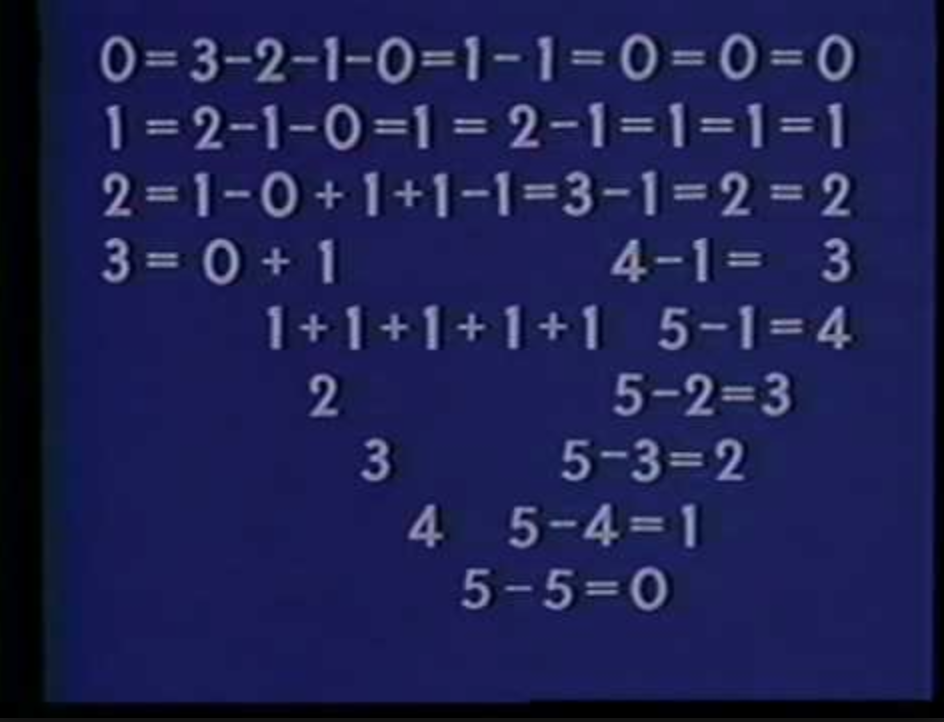

This week - Data Vis
I am in a data visualization class, and we had an assignment to find a visualization we liked, one we didn't, and explain why.
It was easy to find one I liked – an awesome NYT interactive visualization on baseball swings – but harder to describe why one was less successful.
I think that is because visualizations are made in a way that implies confidence: that they are a tool to convey information.
It is difficult to know what is fact and fiction in a visualization, and what as a designer we should be able to change for the sake of design.

NYT best visualizations of the year.
The Cool Viz Itself.
I thought this visualization was so succesful in the way it transformed a single data set to provide a variety of interactive experiences.
By emphasizing scale and motion, it created an experience out of a single image.

Terrible in so many ways, but primarily in how it emphasizes that 3d slug line that looks like a glob of paint.
And that it uses a line chart to show a single data point, 3 tweets one weekend.
I liked the challenge of designing modular type. Modular type for coding systems just makes a lot of sense to me, as coding itself is modular.
I like the way that the design references the way of making.

1956 by Norman McLaren and Evelyn Lambart. Very cool use of simple and refined animation.
George Wylesol: uses scanning and distortion to add a physical - digital element to his work. Really beautiful result.
I found the first chapter of Microinteractions to be really interesting.
The author constantly referenced different examples of Microinteractions in succesful products, and I didn't realize how common and defining they were.
Two things stood out to me.
NYT
Really fascinating to think that the simple awareness indicator could redefine the experience of texting, but also simulate actual conversation,
helping people more easily follow social cues of when to wait and when to talk.
"As technologists describe it, the typing feature rests somewhere between real-life speech, with tone and pacing — what linguists call “synchronous” communication — and text-based communication (“asynchronous”)"
That the Mac scroll direction changed when the iphone came out. Scrolling ostensibly models a real action, yet in reality, that action is
just taught by the developers of UIs. No one knew how to scroll until a scrollpad came out. The sucess in the interaction lies in the
speed that people pick up and become comfortable with a new UI. But the rules that define that interaction are at their core totally arbitrary!
Back Home